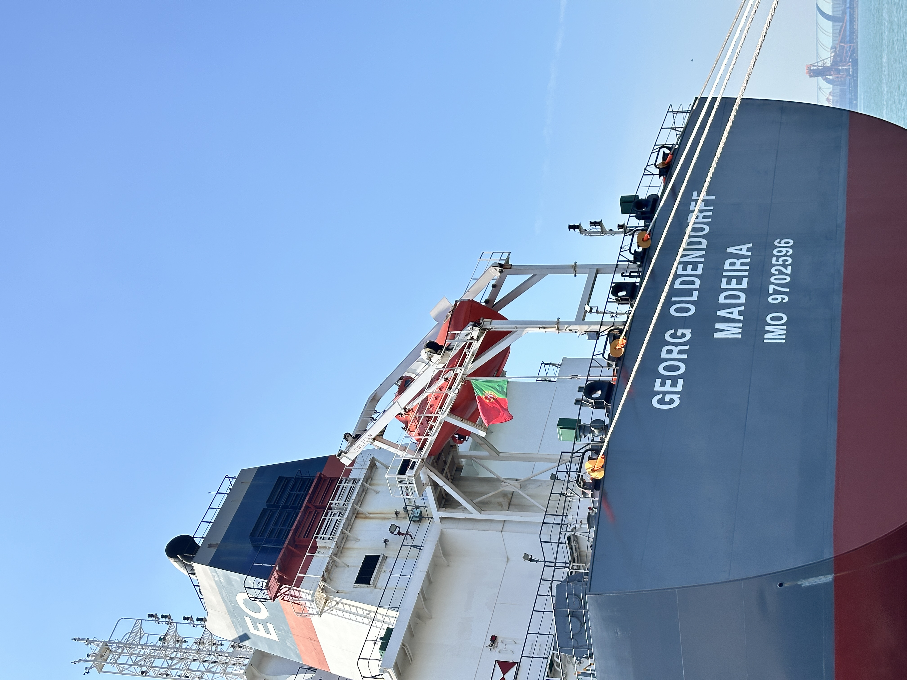

2026-09-27
Annaba Cement Export Highlights Port Execution
A reported 26,000-tonne bagged-cement shipment from Algeria to the United States shows why export success depends on packaging, lifting capacity, documents and coordinated port operations.
Annaba 港水泥出口凸显港口执行与包装协同
一票据报道为 26,000 吨、由阿尔及利亚发往美国的袋装水泥货物说明，出口成败取决于包装、吊装能力、单证与港口协同。

Just Info DZ reported on 27 September 2026 that 26,000 tonnes of cement produced by Biskria Ciment had been loaded at the Port of Annaba for shipment to the United States aboard MATILDA GS. The cargo was packed in large-capacity bags. For cement export logistics, the useful signal is the coordination required to convert material availability into a seaworthy, documented cargo.
1. Packaging is part of the logistics design
Jumbo-bag shipments require more than selecting a bag size. Exporters need verified bag strength, controlled filling, safe stacking, weather protection and lifting arrangements compatible with both loading and discharge ports. Bag damage or inconsistent weights can create claims even when the cement itself meets specification.
2. Port productivity depends on coordinated resources
The report describes the mobilisation of handling equipment and coordination among customs, forwarders, dockworkers and maritime authorities. These interfaces determine loading rate and vessel time. Before fixing a shipment, parties should confirm berth access, crane capacity, labour windows, tally procedures and responsibility for delays.
3. New destination markets raise the documentation bar
A transatlantic shipment must align commercial documents, quality certificates, origin documentation, packing records and bills of lading. The same discipline applies when shipping GGBFS, GBFS or clinker: quality acceptance and logistics execution should be written into the contract rather than assumed.
Takeaway: The Annaba cargo shows that export competitiveness is operational. Packaging, cargo readiness, port productivity and document control must work together if one successful shipment is to become a repeatable trade lane. Source: Just Info DZ, 27 September 2026.
Just Info DZ 于 2026 年 9 月 27 日报道，Biskria Ciment 生产的 26,000 吨水泥已在 Annaba 港装上 MATILDA GS 轮，发往美国，货物采用大容量袋包装。对水泥出口物流而言，值得关注的是把现货转化为适航、单证完整货盘所需的协同执行。
1. 包装是物流设计的一部分
大袋运输不只是选择袋重。出口商还需验证包装强度、控制灌装、确保安全堆码、防雨，并使吊装方案同时适配装港和卸港。即使水泥质量合格，破袋或袋重不一致也可能引发索赔。
2. 港口效率取决于资源协同
报道提到港口调动装卸设备，并协调海关、货代、码头工人和海事部门。这些接口决定装船效率与船舶占用时间。订船前应确认泊位、吊机能力、作业窗口、理货程序和延误责任。
3. 新目的地市场提高单证要求
跨大西洋货物需要商业单据、质量证书、原产地文件、包装记录与提单相互一致。运输矿渣粉（GGBFS）、粒化高炉矿渣（GBFS）或熟料时也应遵循相同纪律：质量验收和物流义务必须写入合同，不能依赖默认理解。
结论：Annaba 这票货说明，出口竞争力本质上是执行能力。只有包装、货物准备、港口效率与单证控制协同运行，一次成功发运才可能变成可重复的贸易航线。来源：Just Info DZ，2026 年 9 月 27 日。